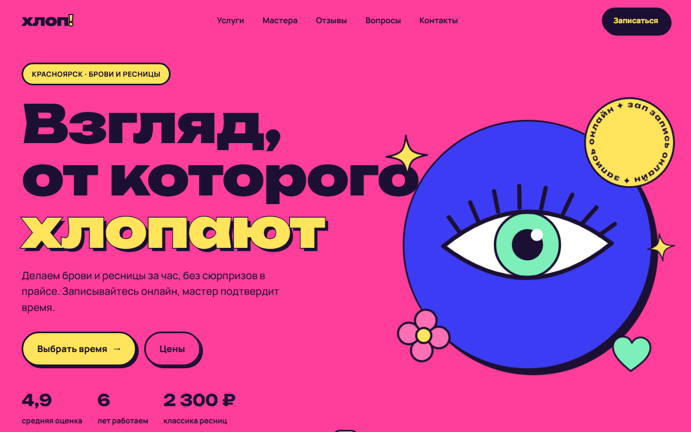
Хлоп
студия бровей и ресниц · Красноярск
Глаз в первом экране следит за курсором и моргает, прайс по вкладкам, запись в 4 шага с конфетти.
Концепт-сайты для студий и сервисов и одно веб-приложение. Всё свёрстано с нуля, без конструкторов: свои иллюстрации, анимации и онлайн-запись.

студия бровей и ресниц · Красноярск
Глаз в первом экране следит за курсором и моргает, прайс по вкладкам, запись в 4 шага с конфетти.
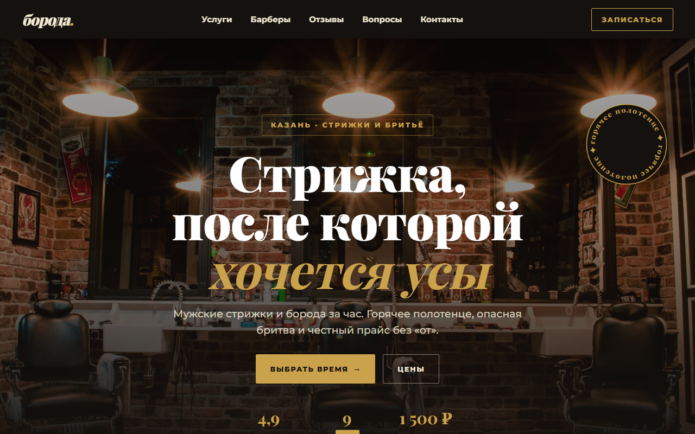
барбершоп · Казань
Мужские стрижки и борода за час. Горячее полотенце, опасная бритва и честный прайс без «от».
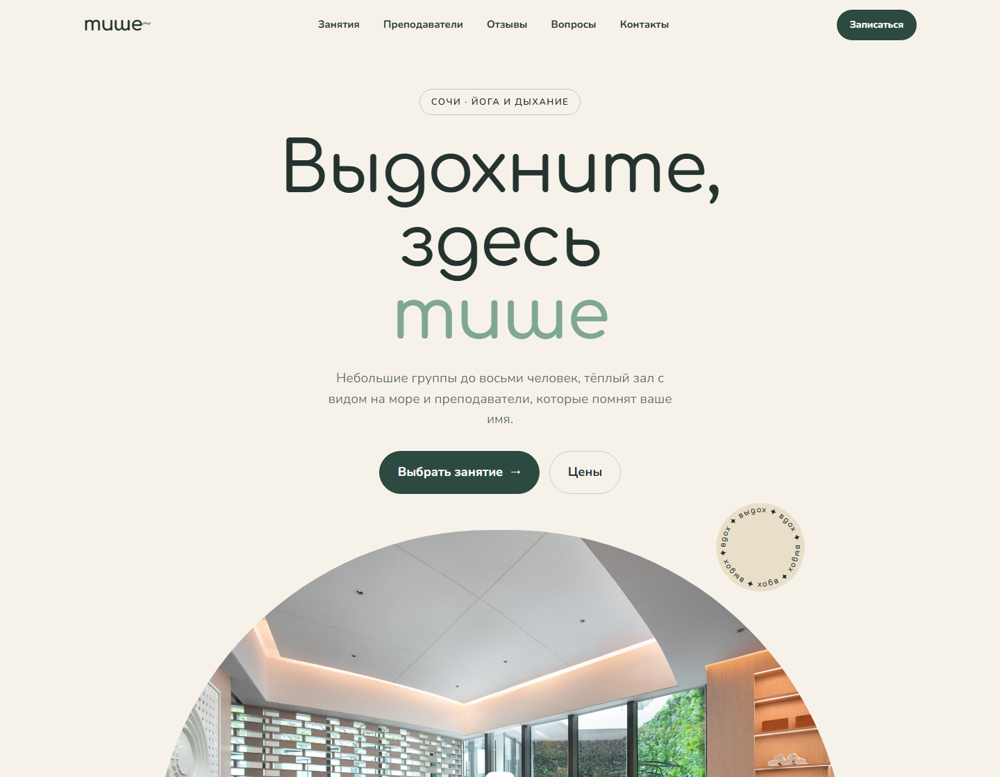
студия йоги · Сочи
Небольшие группы до восьми человек, тёплый зал с видом на море и преподаватели, которые помнят ваше имя.
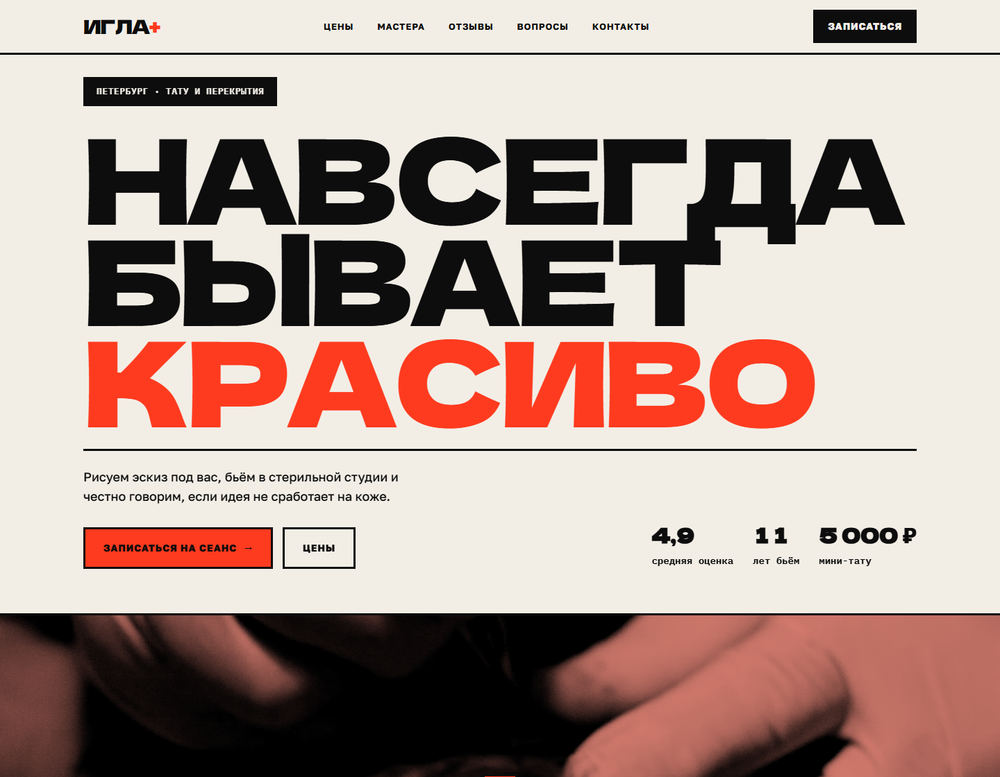
тату-студия · Петербург
Рисуем эскиз под вас, бьём в стерильной студии и честно говорим, если идея не сработает на коже.
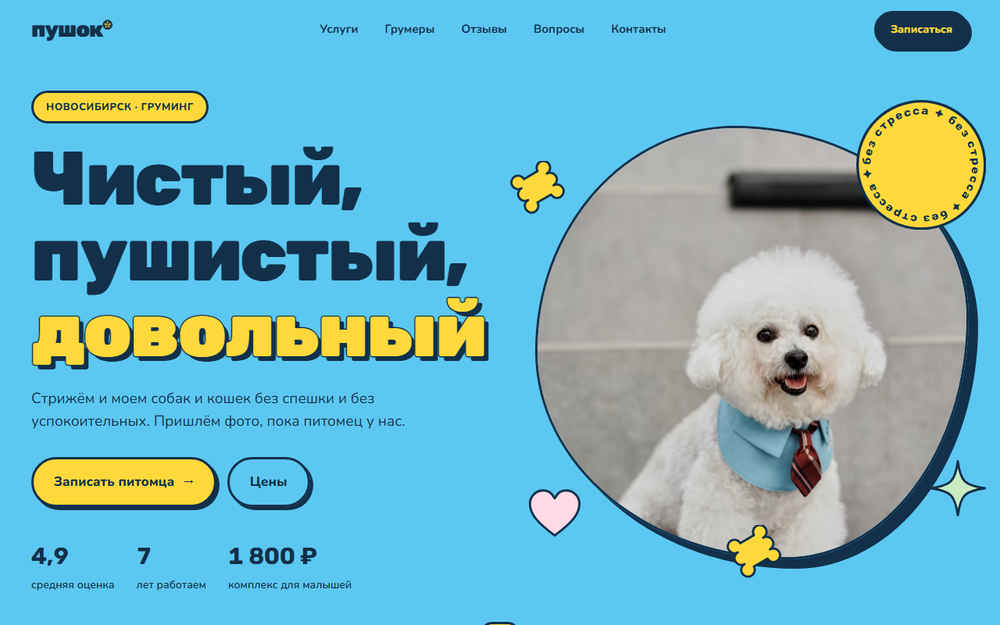
груминг-салон · Новосибирск
Стрижём и моем собак и кошек без спешки и без успокоительных. Пришлём фото, пока питомец у нас.
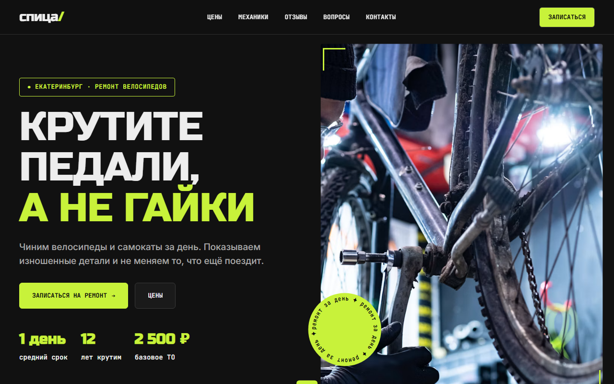
веломастерская · Екатеринбург
Чиним велосипеды и самокаты за день. Показываем изношенные детали и не меняем то, что ещё поездит.
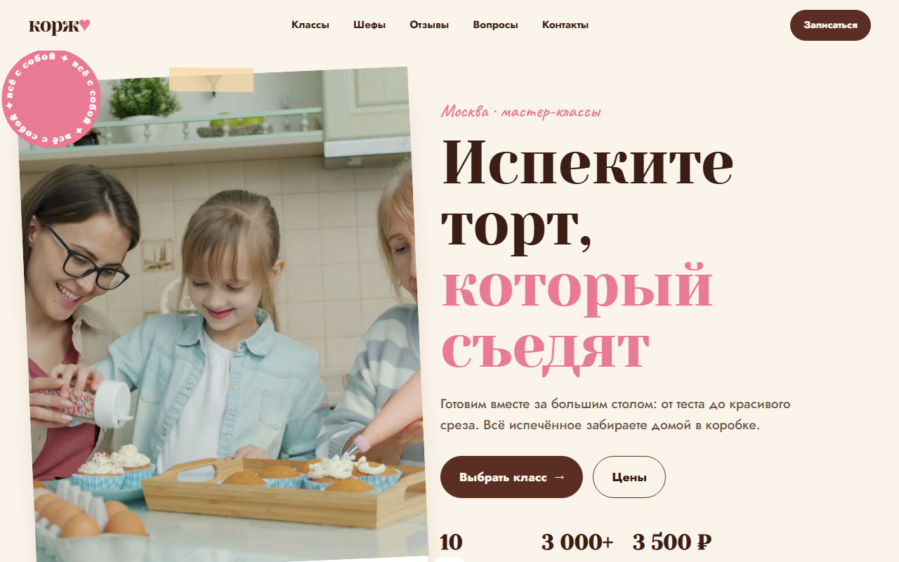
кулинарная школа · Москва
Готовим вместе за большим столом: от теста до красивого среза. Всё испечённое забираете домой в коробке.
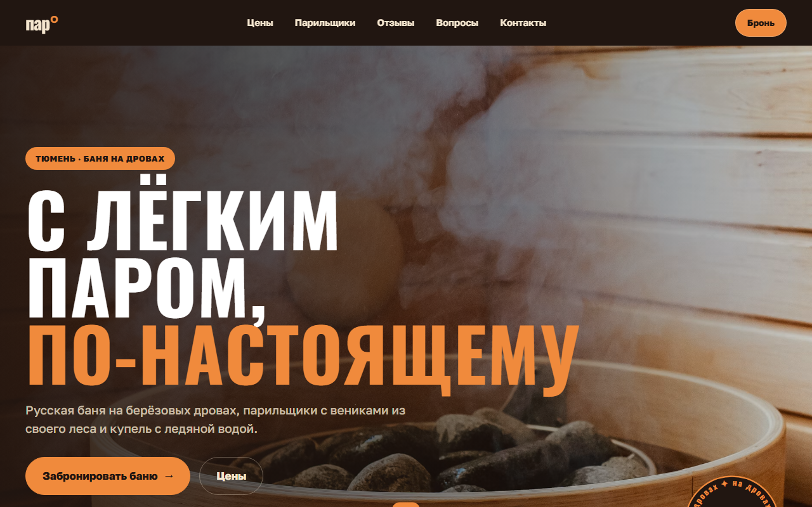
банный клуб · Тюмень
Русская баня на берёзовых дровах, парильщики с вениками из своего леса и купель с ледяной водой.
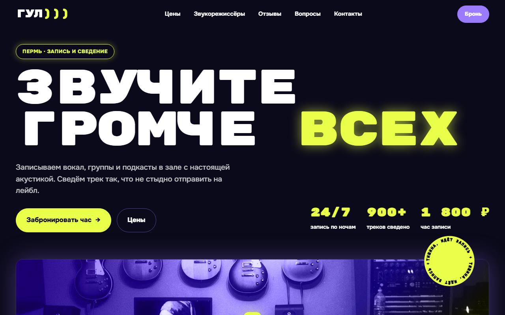
студия звукозаписи · Пермь
Записываем вокал, группы и подкасты в зале с настоящей акустикой. Сведём трек так, что не стыдно отправить на лейбл.
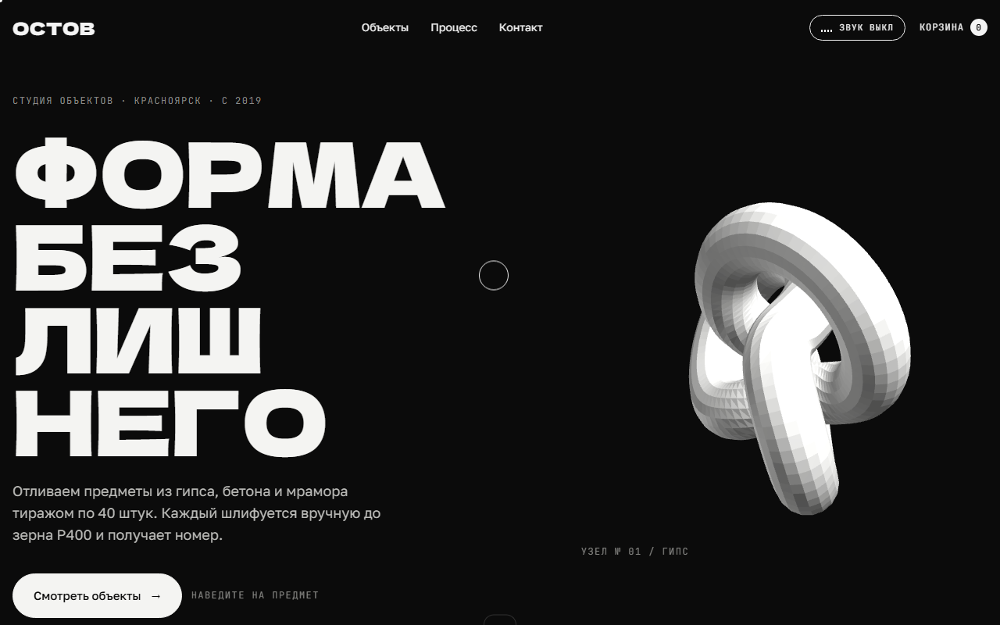
студия предметов из гипса и бетона · Красноярск
Чёрно-белая витрина с вращающимся 3D-объектом, каталогом и корзиной.
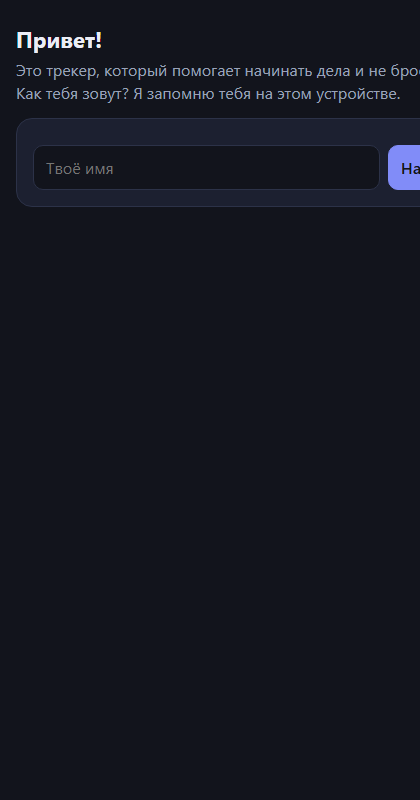
веб-приложение
Трекер, который помогает начинать дела и не бросать их. Помнит пользователя на устройстве, светлая и тёмная тема.